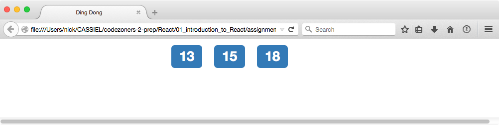
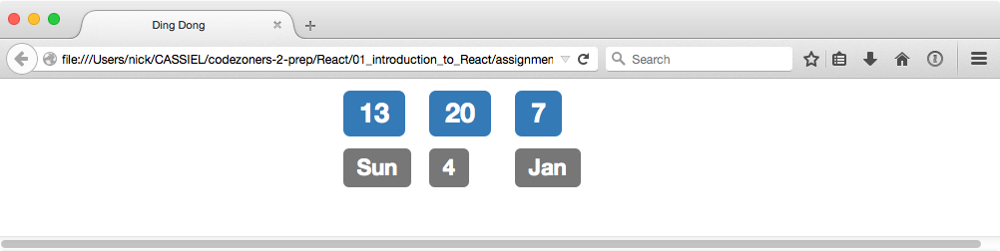

This code will embed the date into a web page
<div>
<script type="text/javascript">
document.write(Date());
</script>
</div>The script runs once, when the page is loaded
<script src="http://fb.me/react-0.12.2.js"></script>
<script src="http://fb.me/JSXTransformer-0.12.2.js"></script>
<!-- ... -->
<div id="example">If you can see this, it's gone wrong!</div>
<script type="text/jsx">
/** @jsx React.DOM */
React.renderComponent(
<div>{Date()}</div>,
document.getElementById('example')
);
</script>Page is still static
<script src="http://fb.me/react-0.12.2.js"></script>
<script src="http://fb.me/JSXTransformer-0.12.2.js"></script><div id="example">If you can see this, it's gone wrong!</div><script type="text/jsx">
/** @jsx React.DOM */
React.renderComponent(
<div>{Date()}</div>,
document.getElementById('example')
);
</script>Print the date into the heading
(Example code is here.)
Print the date into the page title
Build more complex interaction using React's class machinery
/** @jsx React.DOM */
var MyDate = React.createClass({
getInitialState: function () {
return {date: Date()};
},
render: function () {
return <div>{this.state.date}</div>
}
});React.renderComponent(
<MyDate />,
document.getElementById('target')
);<script src="js/button-date.js" type="text/jsx"></script>You still need the /** @jsx React.DOM */ in the JS file
Add a button to the render method
render: function () {
return <div>
<div>{this.state.date}</div>
<div><button type="button" onClick={this.handleClick}>Update!</button></div>
</div>;
}Add a callback to update the object
handleClick: function () {
this.setState({date: Date()});
}That's it!
We've provided an outline of the button example here. Can you make it work?
tick: function () {
this.setState({date: Date()});
},(The function can have any name; tick seems an obvious choice.)
componentDidMount: function() {
this.interval = setInterval(this.tick, 1000);
},
componentWillUnmount: function() {
clearInterval(this.interval);
},(The names componentDidMount and componentWillUnmount are specified by React.)
Javascript provides date and time methods
JavaScript Hell
> Date();
'Sun Jan 04 2015 11:45:55 GMT+0000 (GMT)'> var d = new Date();
> d.toDateString();
'Sun Jan 04 2015'
> d.getFullYear();
2015
> d.getTime();
1420372047327More info: https://developer.mozilla.org/en-US/docs/Web/JavaScript/Reference/Global_Objects/Date
Use the Date object and methods to implement a digital clock
We're using Bootstrap for the grid layout and coloured labels.
Outline of the code here.
Can you add day and date display?
(How can you generate the day and month names?)